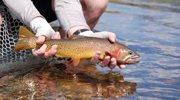
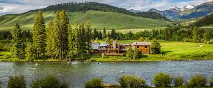
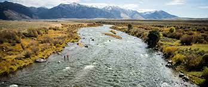
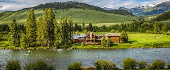
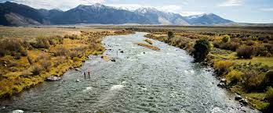
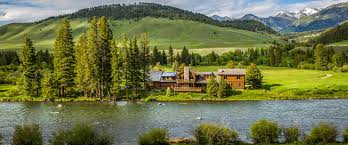
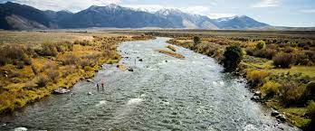

Montana Fly Fishing

 





Fly fishing in Montana is one of the best experiences because of Montana's natural beauty. The rivers and streams in Montana are known for their abundance of fish species. These included wild trout such as rainbow, brown, and brook trout. Iconic rivers like the Missouri, Madison, Gallatin, and Yellowstone provide fisherman the ability to catch all of these trout.
Montana also has a prominent fly-fishing culture. Many world-renowned fishing poles, such as Winston rods, are made and sold in Montana. Flyshops can be found in any town near a river where you can find abundant guides who can offer advice on flies to make your fishing trip a success.